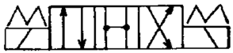
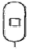
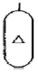
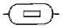
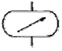

설비보전기능사 (2012-10-20 기출문제)
1과목: 기계보전 일반(대략구분)
1. 정비 시스템에 속하지 않는 것은?
- 예방 정비
- 사후 정비
- 개량 정비
- 개수 정비
(정답률: 84%)

2. 일반 유도 전동기의 특징으로 틀린 것은?
- 구조가 간단하다.
- 품질, 성능이 안정되어 있다.
- 회전수 조절이 자유롭다.
- 전원 회로설치가 용이하다.
(정답률: 79%)
3. 배관을 분기하지 않고 방향만 180로 바꿔주는 배관용 이음쇠는?
- 티(T)
- 와이(Y)
- 크로스(cross)
- U형 밴드
(정답률: 81%)
4. 배관설비 중 나사이음부의 누설이 발생했을 때 정비 내용으로 잘못된 것은?
- 나사이음부 누설이 발생했을 경우 그 상태로 밸브나 관을 더 죈다.
- 플랜지부터 순차적으로 누설부위 까지 분해하여 상태를 확인한다.
- 누설부위의 교체 여부를 판단한 후 교체가 불필요 할 때에는 실(seal) 테이프를 감고 다시 조립한다.
- 관의 분해, 교체가 용이하게 플랜지나 유니언 이음쇠가 적당히 배치되도록 한다.
(정답률: 73%)
5. 금속재료가 고온에서 일정한 하중을 받고 있을 때 시간의 경과에 따라 변형도가 증가하는 현상을 무엇이라 하는가?
- 피로한도
- 크리프
- 인장강도
- 시효경화
(정답률: 59%)
6. 고장, 정지 또는 유해한 성능저하를 가져온 후에 수리를 행하는 보전 방식은?
- 사후보전
- 예방보전
- 생산보전
- 개량보전
(정답률: 90%)
7. 나사의 종류를 표시하는 기호 중에서 관용평행나사를 나타내는 것은?
- E
- G
- M
- R
(정답률: 74%)
8. 브레이크(brake)의 역할이 아닌 것은?
- 기계 운동부분의 에너지를 흡수한다.
- 기계 운동부분의 속도를 감소시킨다.
- 기계 운동부분을 정지시킨다.
- 기계 운동부분의 마찰을 감소시킨다.
(정답률: 80%)
9. 웜기어(worm gear)의 감속기의 특징으로 잘못된 것은?
- 치면 에서의 미끄럼이 커서 전동효율이 떨어진다.
- 적은 용량으로 큰 감속비를 얻을 수 있다.
- 역전을 방지할 수 있다.
- 소음이 커서 정숙한 회전이 어렵다.
(정답률: 70%)
10. 직접측정에 사용되는 측정기가 아닌 것은?
- 버니어캘리퍼스
- 마이크로미터
- 다이얼게이지
- 측장기
(정답률: 63%)
11. 캐비테이션의 방지책이 아닌 것은?
- 펌프의 설치 위치를 되도록 낮게 할 것
- 흡입관을 가능한 짧게 할 것
- 펌프의 회전수를 낮게 할 것
- 흡입양정을 크게 할 것
(정답률: 69%)
12. 두 개의 너트를 사용하여 최초의 너트로 조이고 두 번째 너트를 조인 후 두 번째 너트를 잡고 최초의 너트를 약간 역회전 시켜서 볼트 너트의 풀림을 방지하는 이완 방지법은?
- 홈달린 너트 분할 핀 고정에 의한 방법
- 절삭 너트에 의한 방법
- 로크 너트에 의한 방법
- 특수 너트에 의한 방법
(정답률: 75%)
13. 액상 윤활유가 갖추어야 할 성질이 아닌 것은?
- 충분한 점도를 가질 것
- 청정하고 균질하지 않을 것
- 화학적으로 불활성일 것
- 산화나 열에 대한 안정성이 높을 것
(정답률: 77%)
14. 양쪽지지형 송풍기의 축을 설치할 때 전동기축과 반전동기축의 좌 ･우측 구배의 차는 몇 mm 이하인가?
- 0.⑤
- 0.1
- 0.15
- 0.2
(정답률: 73%)
15. 모터와 펌프의 축을 커플링으로 연결 조립하여 가동하였을 때 커플링 연결부의 축 정렬 불량으로 나타날 수 있는 가장 일반적인 현상은 무엇인가?
- 언밸런스
- 미스 얼라인먼트
- 공진현상
- 캐비테이션
(정답률: 50%)
16. 윤활유 급유법 중 순환 급유방식이 아닌 것은?
- 사이펀 급유법
- 강제순환 급유법
- 중력순환 급유법
- 유욕 급유법
(정답률: 72%)
17. 내연기관의 윤활유에 연료유가 혼입되어 윤활유의 점도가 변화하는 현상은?
- 윤활유의 산화
- 윤활유의 탄화
- 윤활유의 유화
- 윤활유의 희석
(정답률: 63%)
18. 관용 기계요소의 제도 시 유체의 표기가 잘못된 것은?
- 공기 : A
- 가스 : G
- 기름 : L
- 수증기 : S
(정답률: 87%)
19. 왕복식 압축기가 원심식 압축기 보다 좋은 점은 무엇인가?
- 고압 발생이 가능하다.
- 맥동 압력이 없다.
- 대용량이다.
- 윤활이 쉽다.
(정답률: 81%)
20. 도형의 대부분을 외형도로 하고, 필요로 하는 요소의 일부분만을 단면도로 나타낸 것은?
- 전단면도
- 한쪽 단면도
- 부분 단면도
- 회전도시 단면도
(정답률: 83%)
2과목: 설비관리(대략구분)
21. 도면의 종류 중 제작도를 만드는 기초가 되는 도면은 무엇인가?
- 계획도
- 견적도
- 설명도
- 주문도
(정답률: 74%)
22. 관료에서 유속의 급격한 변화에 의해 관내 압력이 상승 또는 하강하는 현상은?
- 캐비테이션
- 수격작용
- 서징현상
- 크래킹
(정답률: 68%)
23. 벨트 내측과 풀리 외측에 같은 피치의 사다리꼴 또는 원형모양의 돌기를 만들어 회전 중에 벨트와 벨트 풀리가 이 물림이 되어 미끄럼이 없이 정확한 회전각속도 비가 유지되는 벨트는?
- 평 벨트
- V 벨트
- 타이밍 벨트
- 사일런트 체인
(정답률: 71%)
24. 투상도를 보는 방향에 따라 분류할 때 투상 물체의 가장 주된 면, 즉 기본이 되는 투상도를 무엇이라 하는가?
- 정면도
- 평면도
- 우측면도
- 후면도
(정답률: 89%)
25. 제조부문과 협의하여 연간계획 하에서 추진하며, 검사 주기가 1개월 이내인 검사를 무엇이라 하는가?
- 정기검사
- 일상검사
- 월간검사
- 분기검사
(정답률: 52%)
26. 다음 중 설비보전의 표준이 아닌 것은?
- 설비 수리표준
- 설비 검사표준
- 제조 기술표준
- 설비 정비표준
(정답률: 82%)
27. 설비보전의 추진은 P-D-C-A 4단계의 사이클로 지속적인 개선을 추진한다. 내용이 틀린 것은?
- 계획 (Plan)
- 실시 (Do)
- 조정 (Control)
- 재실시 (Action)
(정답률: 61%)
28. 계속적 또는 반복적으로 사용되며, 고액의 자본을 투입한 유형 고정 자산의 총칭을 무엇이라고 하는가?
- 기구
- 범용 공작기계
- 설비
- 컴퓨터 제어기계
(정답률: 84%)
29. 설비보전을 효과적으로 운영함으로써 얻을 수 있는 기대 효과와 거리가 먼 것은?
- 설비 고장으로 인한 기계 및 작업의 유효시간 감소
- 설비의 신뢰성 향상으로 인한 원가절감과 품질향상
- 작업장의 안전도 향상
- 설비 수리에 투입된 노무비의 증가
(정답률: 81%)
30. 자주보전에 대한 설명 중 거리가 가장 먼 것은?
- TPM의 시작단계로 TPM 수행의 가장 기본이 될 기능이다.
- 자기가 운전하는 설비는 본인 스스로 관리함으로써 현장 개선의 일익을 담당하는 것이 핵심이다.
- 보전요원들은 기술개발을 위하여 많은 시간 투자와 제조현장의 생산성 극대화를 추진하여야 한다.
- 고장 및 불량을 극소화 하여 회사가 계획하고 필요한 보전효율 달성을 목적으로 한다.
(정답률: 31%)
3과목: 공유압 일반(대략구분)
31. 생산보전을 중심으로 총체적인 설비관리를 추진함으로서 얻을 수 있는 효과가 아닌 것은?
- 제조원가 감소
- 예비품 관리향상 및 재고 감소
- 설비보전 비용증가 및 제품불량 감소
- 설비고장에 따른 휴지손실 감소
(정답률: 52%)
32. 공구관리의 기능을 계획단계와 보전단계로 구분할 때 계획단계의 기능은?
- 공구의 제작 및 수리
- 공구의 검사
- 공구의 보관과 대출
- 공구의 설계 및 표준화
(정답률: 63%)
33. 만성로스 개선 방법 중에서 설비나 시스템의 불합리 현상을 원리 및 원칙에 따라 물리적 성질과 메커니즘을 밝히는 사고방식은?
- QM분석
- FMEA
- FTA
- PM분석
(정답률: 81%)
34. 과학적 합리적 계측을 전제로 생산활동이나 상업활동 및 경영관리를 할 수 있는 관리는?
- 생산관리
- 자재관리
- 원가관리
- 계측관리
(정답률: 58%)
35. 종합적 생산보전(TPM)의 주요활동과 가장 거리가 먼 것은?
- 자주보전활동
- 계획보전활동
- 전문보전활동
- 사후활동(소방활동)
(정답률: 69%)
36. 보처(Bottcher)는 보전조직을 집중보전, 지역보전, 부분보전 및 절충보전으로 구분하고 있다. 집중보전의 장점으로 볼 수 없는 것은?
- 노동력의 유효성
- 보전비 통제의 확실성
- 보전책임의 명확성
- 운전과의 일체감
(정답률: 60%)
37. 공사관리에서 PERT의 계산절차는 낙관적 시간, 비관적 시간, 전형적 시간의 추정시간을 사용하여 어떤 분포의 평균치를 구하는가?
- 정규분포
- 베타분포
- 지수분포
- 포아송분포
(정답률: 52%)
38. 예방보전 주기에 대한 설명으로 맞는 것은?
- 예비품 이용이 용이한 설비는 예방보전이 유리하다.
- 예방보전 주기가 짧으면 보전비용이 감소한다.
- 예방보전 주기가 짧으면 돌발고장 수리횟수가 감소한다.
- 고장정지 손실이 큰 중점설비는 예방보전주기를 길게 한다.
(정답률: 56%)
39. 개별개선 활동대상으로 해당되지 않는 것은?
- 설비효율 저하 6대 로스 개선활동
- 사람의 효율 저하 7대 로스 개선활동
- 원단위 3대 로스 개선활동
- 일상업무 및 5S를 위한 개선활동
(정답률: 53%)
40. 유압 실린더나 유압 모터의 작동 방향을 바꾸는데 사용되는 것으로 회로 내의 유체 흐름의 통로를 조정 하는 것은?
- 체크 밸브
- 유량제어 밸브
- 방향 제어 밸브
- 압력 제어 밸브
(정답률: 70%)
41. 다음 도면을 보고 알 수 없는 사항은 어느 것인가?

- 포트 수
- 위치의 수
- 조작방법
- 접속의 형식
(정답률: 60%)
42. 공압 북동 실린더의 구조에서 커버와 실린더 튜브를 서로 결속, 고정시키는 부위는 어떤 것인가?
- 패킹
- 트라니언
- 쿠션장치
- 타이로드
(정답률: 56%)
43. 다음 중 압력제어 밸브에 속하지 않는 것은?
- 감압밸브
- 교축밸브
- 릴리프밸브
- 시퀀스밸브
(정답률: 72%)
44. 다음 중 보조가스 용기에 대한 기호로 맞는 것은?




(정답률: 67%)
45. 조작력이 작용하고 있을 때의 밸브 몸체의 최종 위치를 나타내는 용어는?
- 노멀 위치
- 중간 위치
- 작동 위치
- 과도 위치
(정답률: 73%)
46. 유압피스톤 펌프의 구조에서 경사각을 조정하여 토출량을 변화시킬 수 있는 것은?
- 콘로드
- 사판
- 로우터
- 밸브 플레이트
(정답률: 49%)
47. 유압 실린더의 기본 구성품이 아닌 것은?
- 피스톤
- 피스톤 로드
- 실린더 튜브
- 프런지형 지지대
(정답률: 71%)
48. 기계식 서보밸브 설명과 관계가 없는 것은?
- 위치 조정을 위하여 힘을 증폭하는 밸브이다.
- 축의 운동방향 및 변위를 결정해 준다.
- 조향장치에 많이 사용한다.
- 오리피스에서 증폭되어 큰 힘을 낸다.
(정답률: 62%)
49. 다음은 어큐뮬레이터를 설치할 때 주의사항을 열거한 것이다. 틀린 것은?
- 어큐뮬레이터와 펌프사이에는 역류방지밸브를 설치한다.
- 어큐뮬레이터는 점검, 보수에 편리한 장소에 설치한다.
- 펌프 맥동방지용은 펌프 토출측에 설치한다.
- 어큐뮬레이터는 수평으로 설치한다.
(정답률: 68%)
50. 탠덤 실린더를 사용하여 실린더의 램을 전진시켜 높지 않은 압력으로 강력한 압축력을 얻을 수 있는 회로는?
- 시퀀스 회로
- 무부하 회로
- 증강 회로
- 블리드 오프 회로
(정답률: 60%)
4과목: 산업안전(대략구분)
51. 다음 중 사용압력의 범위가 10~100kgf/cm2로서, 가장 널리 사용되는 공기 압축기는?
- 회전식 공기 압축기
- 왕복식 공기 압축기
- 스크루식 공기 압축기
- 베인식 공기 압축기
(정답률: 62%)
52. 관로의 면적을 줄인 길이가 단면치수에 비하여 비교적 긴 경우의 교축을 무엇이라 하는가?
- 초크
- 오리피스
- 공동
- 서지
(정답률: 67%)
53. 작동유속에 혼입하는 불순물을 제거하기 위하여 사용하는 부품은 어느 것인가?
- 스트레이너
- 밸브
- 패킹
- 축압기
(정답률: 66%)
54. 산업안전보건법의 목적에 해당되지 않는 것은?
- 산업안전보건기준의 확립
- 산업재해의 예방과 쾌적한 작업환경조성
- 산업안전보건에 관한 정책의 수립 및 실시
- 근로자의 안전과 보건을 유지 ・ 증진
(정답률: 67%)
55. 크레인 후크걸이용 와이어로프의 벗겨지는 것을 방지하기 위한 장치를 무엇이라 하는가?
- 권과방지장치
- 과부하방지장치
- 해지장치
- 비상정지장치
(정답률: 56%)
56. 재해의 원인으로 볼 수 없는 것은?
- 운전을 정지하고 기계를 정비한다.
- 허가없이 장치를 운전한다.
- 결함이 있는 장치를 운전한다.
- 안전장치를 제거하고 운전한다.
(정답률: 79%)
57. 건설재해 예방대책으로 맞지 않는 것은?
- 경영자의 안전에 관한 인식이 투철하여야 한다.
- 근로자에 대한 안전 관리 교육을 철저히 하여야 한다.
- 재해 예방을 위하여 적정한 공사 기간을 확보하여야 한다.
- 하도급에 대한 안전관리체제를 느슨하게 하여야 한다.
(정답률: 85%)
58. 가죽제 안전화의 구비조건으로 맞지 않는 것은?
- 신는 기분이 좋고 작업이 쉬울 것
- 잘 구부러지고 신축성이 있을 것
- 가능한 가벼울 것
- 디자인, 색상 등은 고려하지 말 것
(정답률: 68%)
59. 가연성 물질이라고 볼 수 없는 것은?
- 아세틸렌
- 프로판
- 수소
- 산소
(정답률: 72%)
60. 선반작업 시 안전사항으로 올바르지 않은 것은?
- 절삭공구의 고정은 확실하게 한다.
- 공작물의 측정은 절삭 또는 회전 중에 장갑을 끼고 한다.
- 가공물의 장착이 끝나면 척 렌치류는 벗겨 놓는다.
- 기계위에 공구나 가공물을 올려놓지 않는다.
(정답률: 80%)